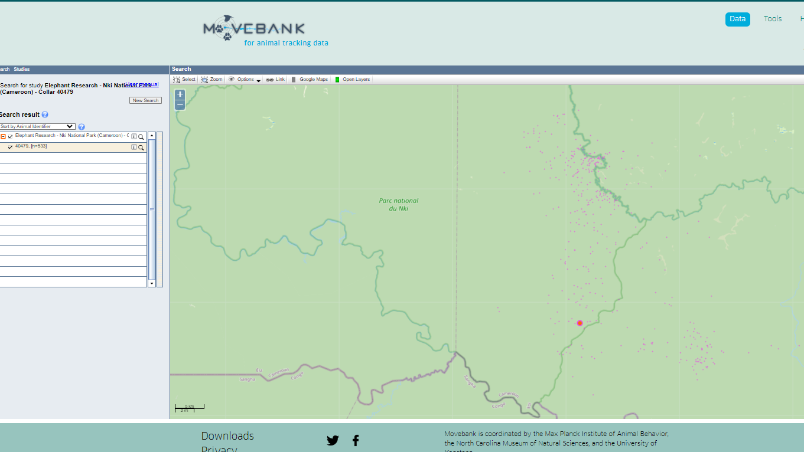
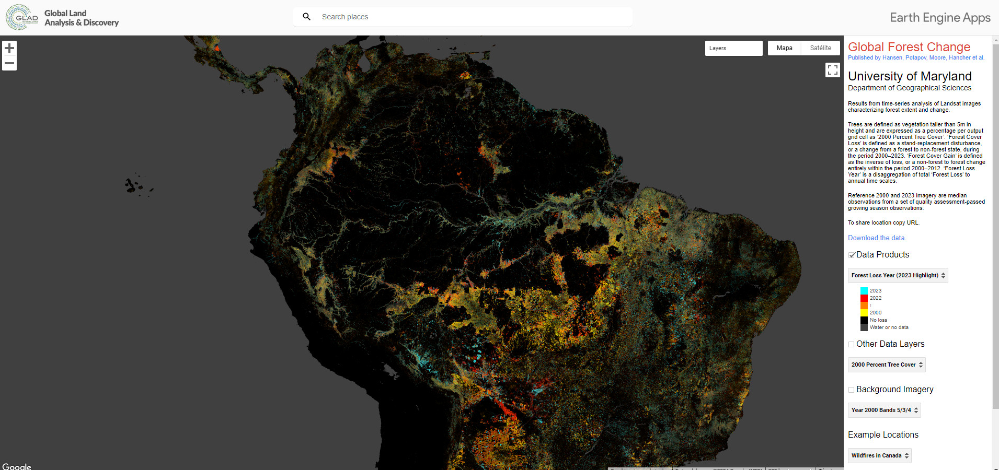

Guía del estudiante para el curso de estadística y econometría espacial
0.1 ¿Por qué es importante la estadística espacial y la econometría espacial?
En el mundo actual de la ciencia de datos y la toma de decisiones, la estadística espacial y la econometría espacial juegan un papel crucial en la comprensión y el análisis de datos geoespaciales. . En este mismo mundo la cantidad de información hace que las disciplinas sean interrelacionadas, al combinar técnicas estadísticas avanzadas con datos georreferenciados, la estadística espacial y la econometría espacial, estas disciplinas permiten a los investigadores y profesionales explorar patrones espaciales, modelar relaciones entre variables y realizar predicciones en contextos geográficos, desde la ecología hasta la economía. A continuación, se presentan algunos ejemplos de aplicaciones exitosas de estas disciplinas:
Aquí tienes los enlaces a algunos proyectos exitosos de análisis estadístico espacial y econometría espacial que pueden servir como ejemplos inspiradores para los estudiantes:
0.1.1 1. Seguimiento de Especies en Hábitats Naturales
Proyecto de seguimiento de elefantes en África: - Descripción: Este proyecto rastrea el movimiento de elefantes en África utilizando dispositivos GPS para comprender sus patrones de movimiento y mejorar los esfuerzos de conservación.
- Enlace: Movebank - Elephant Tracking

0.1.2 2. Análisis de la Distribución de Enfermedades
Proyecto de mapeo y análisis del dengue en Brasil: - Descripción: Este estudio analiza la distribución espacial del dengue en diferentes regiones de Brasil y los factores ambientales que contribuyen a su propagación.
0.1.3
0.1.4 3. Estudios de Mercado y Análisis Económico Espacial
Análisis espacial del mercado inmobiliario en Boston:
Este proyecto utiliza modelos espaciales para (entre muchas coasas) analizar la distribución de precios de viviendas en Boston y cómo las variables socioeconómicas influyen en estos precios. En este ejemplo mostramos como miden el cambio en la extensión del dosel arbóreo, que en otras palabras representa la copa o parte superior de los arboles, con ello se puede ver la perdida o ganancia de terreno que se ha dado en bostón ocupado por vegetación.
- Enlace: Boston Housing Data Analysis
0.1.5 4. Análisis del Impacto Ambiental
Evaluación del impacto de la minería en la selva amazónica: - Descripción: Este estudio utiliza imágenes satelitales para evaluar el impacto de la minería en la deforestación de la selva amazónica y desarrollar estrategias para la mitigación de daños ambientales.
- Enlace: Amazon Mining Impact

Estos proyectos ilustran la aplicación práctica de técnicas de análisis estadístico espacial y econometría espacial, y muestran cómo la programación en R y las herramientas de código abierto son fundamentales para llevar a cabo estos estudios. A lo largo del curso, aprenderás a utilizar R y paquetes como tidyverse, sf, terra, y geomodels para desarrollar tus propios análisis espaciales.
Existen más uso de la estadística espacial y la econometría espacial en diferentes campos, como la ecología, la agricultura, la planificación urbana, la epidemiología, la criminología, entre otros. Estas disciplinas son fundamentales para comprender la distribución y la interacción de fenómenos en el espacio, y proporcionan herramientas poderosas para la toma de decisiones basada en datos geoespaciales. Pero está en ti y tu pasión el descubrir más sobre estas disciplinas y cómo pueden aplicarse en tu campo de interés.
0.2 Visión General del Curso y Expectativas
0.2.1 Importancia del Open Source en el Análisis Estadístico Espacial y Econometría Espacial
En este curso, exploraremos el fascinante mundo del análisis estadístico espacial y la econometría espacial utilizando herramientas y metodologías de código abierto. La adopción de tecnologías open source en la ciencia de datos ha revolucionado la forma en que abordamos problemas complejos, proporcionando acceso a potentes herramientas de análisis sin barreras de costo. El software de código abierto permite a los investigadores y profesionales colaborar, compartir conocimiento y mejorar continuamente las herramientas que utilizan.
0.2.2 Evidencia de la Calidad del Open Source
La calidad y efectividad del open source en el análisis estadístico espacial están bien representadas por una variedad de paquetes disponibles en CRAN. Entre ellos, destacan:
- tidyverse: Un conjunto de paquetes que facilitan la manipulación y visualización de datos de manera eficiente y coherente.
- sf: Un paquete que proporciona una estructura simple para el manejo y análisis de datos espaciales.
- terra: Herramientas avanzadas para el análisis de datos espaciales y rasterización.
- geomodels: Paquete especializado en modelos geoespaciales avanzados.
Estos paquetes son ejemplos del poder y la versatilidad del software de código abierto, respaldados por una comunidad activa que garantiza su actualización y mejora continua.
0.2.3 Enfoque del Curso
Este curso se centra en la programación con R para la aplicación en estadísticas y econometría espacial. A través de las lecciones, aprenderás no solo a utilizar estas herramientas, sino también a comprender los fundamentos teóricos que las sustentan. Nuestro objetivo es que al finalizar el curso, puedas abordar y resolver problemas espaciales complejos utilizando técnicas estadísticas avanzadas.
0.2.4 Fuentes de Información y Datos
Durante el curso, utilizaremos principalmente fuentes públicas de información, con un énfasis especial en las herramientas espaciales y bases de datos del Ecuador. Esto no solo proporcionará un contexto local relevante, sino que también te permitirá aplicar los conocimientos adquiridos a problemas específicos de nuestra región. Además, incorporaremos bases de datos modernas que ilustran bien el uso de la estadística espacial en contextos globales, proporcionando una visión amplia y aplicada de las técnicas que aprenderás.
0.2.5 Expectativas
Esperamos que los estudiantes se involucren activamente en las actividades prácticas del curso y se familiaricen con los paquetes y herramientas discutidos. La programación será una parte esencial del aprendizaje, por lo que se recomienda dedicar tiempo fuera de las sesiones para practicar y explorar las capacidades de R en el análisis espacial. Al final del curso, deberías ser capaz de:
- Manejar y manipular datos espaciales en R utilizando paquetes especializados.
- Aplicar técnicas de análisis estadístico y econometría espacial a diferentes tipos de datos.
- Utilizar bases de datos públicas y modernas para realizar análisis espaciales relevantes y significativos.
- Desarrollar habilidades de programación que te permitan abordar problemas espaciales con confianza y precisión.
Estamos emocionados de acompañarte en este viaje de descubrimiento y aprendizaje en el campo de la estadística y econometría espacial. ¡Bienvenido al curso!
En este curso el internet y su largo contenido serán nuestros aliados. No olvides que la inteligencia artificial es tu aliada en la búsqueda de información y la resolución de problemas. Así que no dudes en utilizarla para profundizar en los temas que te interesen y enriquecer tu aprendizaje. ¡Adelante!